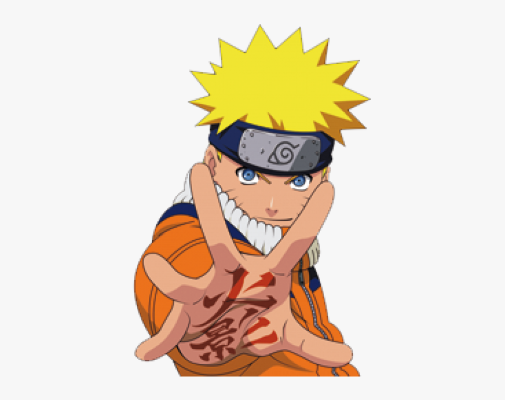

Humble Beginnings
Made by Jordan Conley posted on Monday 1st 2023
context his parents died fighting the Nine Tailed Fox Demon that was attacking their village Konoha
The Bum Hokage which is basically the president just left him in an empty apartment with spoiled milk and stale ramen and said good luck
Also Narutos Fathers' dieing words were to take care of his son he obviously did not do that
Fast forward a little bit our boy Naruto failing school while every else graduates he depressed so he over here sitting on a swing alone
How Did Naruto Get Out Of The Slums?
so how did our boy naruto make it out of the slums? well it started with his first mission escorting some old head to his bridge so he can build it on the way they got jumped and our boy naruto froze up then our boy made an oath to never be a little baby again
In this arc there were 3 main enemies zabuza haku and the lone shark
- Zabuza Momochi
- Haku
- The Lone Shark
you can learn more at Official Naruto Webpage
Making it to the middle class
coming back to the village the Chunin Exams started up and with the Chunin Exam's nearing the end Orochimaru one of the three legendary Sannin attacked with an enemy village Hanzo the Third Hokage stepped up to fight him and unfortunatly died
This is where naruto gets an actuall glow up he goes on a training arc with one of the three legendary Sannin Jiraiya the toad sage he thought him chakra control and the legendary technique the rasengan that only Himself and the Fourth Hokage learned how to do
- Find Tsunade one of the three legendary Sannin and have her become the 5th Hokage
- Train Naruto
- investigate the akatsuki
moving our boy Naruto out of the slums to the middle class